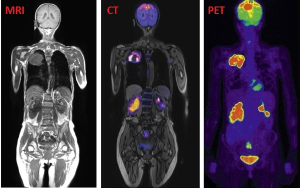

Что такое позитронно-эмиссионная томография (ПЭТ)?

Позитронно-эмиссионная томография (ПЭТ) - это метод ядерной медицины, который измеряет метаболическую активность клеток тканей организма. ПЭТ - это комбинация ядерной медицины и биохимического анализа. Используемый в основном у пациентов с раком, ПЭТ помогает визуализировать биохимические изменения, происходящие в организме, такие как обмен веществ (процесс, посредством которого клетки превращают пищу в энергию после того, как пища переваривается и всасывается в кровь).
ПЭТ отличается от других исследований ядерной медицины тем, что ПЭТ показывает метаболизм в тканях организма, в то время как другие виды исследований ядерной медицины обнаруживают количество радиоактивного вещества, собранного в ткани организма в определенном месте, чтобы исследовать функцию ткани.
Поскольку ПЭТ представляет собой тип процедуры ядерной медицины, это означает, что во время процедуры используется небольшое количество радиоактивного вещества, называемого радиофармпрепаратом (радионуклид или радиоактивный индикатор), чтобы помочь в исследовании исследуемой ткани. В частности, исследования ПЭТ оценивают метаболизм конкретного органа или ткани, так что оценивается информация о физиологии (функциональность) и анатомии (структура) органа или ткани, а также его биохимические свойства. Таким образом, ПЭТ может обнаруживать биохимические изменения в органе или ткани, которые могут идентифицировать начало процесса заболевания до того, как анатомические изменения, связанные с заболеванием, можно увидеть с помощью других процессов визуализации, таких как компьютерная томография (КТ) или магнитно-резонансная томография (МРТ).
ПЭТ чаще всего используют онкологи (врачи, специализирующиеся на лечении рака), неврологи и нейрохирурги (врачи, специализирующиеся на лечении нервной системы) и кардиологи (врачи, специализирующиеся на лечении сердца). Однако, поскольку достижения в технологиях ПЭТ продолжаются, эта процедура начинает более широко использоваться в других областях.
ПЭТ может также использоваться в сочетании с другими диагностическими тестами, такими как компьютерная томография (КТ) или магнитно-резонансная томография (МРТ), чтобы предоставить более точную информацию о злокачественных (раковых) опухолях и других поражениях.

Более новая технология объединяет ПЭТ и КТ в один сканер, известный как ПЭТ-КТ. ПЭТ-КТ особенно перспективна в диагностике и лечении рака, оценке эпилепсии, болезни Альцгеймера и ишемической болезни сердца.
Как работает ПЭТ?
ПЭТ работает с использованием сканирующего устройства (машина с большим отверстием в центре) для обнаружения фотонов (субатомных частиц), испускаемых радионуклидом в исследуемом органе или ткани.
Радионуклиды, используемые при сканировании ПЭТ, получают путем присоединения радиоактивного атома к химическим веществам, которые естественным образом используются конкретным органом или тканью во время его метаболического процесса. Например, при ПЭТ-сканировании головного мозга радиоактивный атом наносится на глюкозу (уровень сахара в крови) для создания радионуклида, называемого фтордезоксиглюкозой (ФДГ), поскольку мозг использует глюкозу для своего метаболизма. ФДГ широко используется при сканировании ПЭТ.
Другие вещества могут использоваться для сканирования ПЭТ, в зависимости от цели сканирования. Если кровоток и перфузия органа или ткани представляют интерес, радионуклид может представлять собой тип радиоактивного кислорода, углерода, азота или галлия.
Радионуклид вводится в вену по внутривенному катетеру. Затем ПЭТ-сканер медленно перемещается по исследуемой части тела. Позитроны испускаются при распаде радионуклидов. Гамма-лучи создаются во время испускания позитронов, и сканер затем обнаруживает гамма-лучи. Компьютер анализирует гамма-лучи и использует эту информацию для создания карты изображения исследуемого органа или ткани. Количество радионуклидов, собранных в ткани, влияет на яркость ткани на изображении и указывает на уровень функции органа или ткани.
Когда нужно проводить ПЭТ?
Как правило, сканирование ПЭТ может использоваться для оценки органов и / или тканей на наличие заболевания или других состояний. ПЭТ также может быть использован для оценки функции органов, таких как сердце или мозг. Наиболее распространенным применением ПЭТ является выявление рака и оценка эффекта терапии рака.
Как проводится ПЭТ?
Сканирование ПЭТ может проводиться амбулаторно. Также возможно, что некоторые стационарные больные могут пройти обследование ПЭТ для определенных условиях.
Хотя в каждом учреждении могут имется определенные протоколы, обычно процедура сканирования ПЭТ выполняется следующим образом:
- Пациента попросят снять любую одежду, украшения или другие предметы, которые могут помешать сканированию.
- Пациента попросят опорожнить мочевой пузырь до начала процедуры.
- Будет введен внутривенный катетер в руку или кисть.
Для некоторых видов сканирования брюшной полости или таза может потребоваться установка мочевого катетера в мочевой пузырь для слива мочи во время процедуры.
В некоторых случаях первоначальное сканирование может быть выполнено до введения радионуклида, в зависимости от типа проводимого исследования. Пациент будет расположен на мягком столе внутри сканера.
Радионуклиду дают возможность сконцентрироваться в органе или ткани в течение примерно 30-60 минут после введения. Пациент будет оставаться в учреждении в течение этого времени. Пациент не будет опасен для других людей, так как радионуклид испускает меньше радиации, чем стандартная рентгенография.
После того, как радионуклид будет поглощен в течение соответствующего периода времени, сканирование начнется. Сканер будет медленно перемещаться по исследуемой части тела.
Когда сканирование будет завершено, катетер будет удален. Если мочевой катетер был установлен, то он будет также удален.
По материалам John Hopkins University